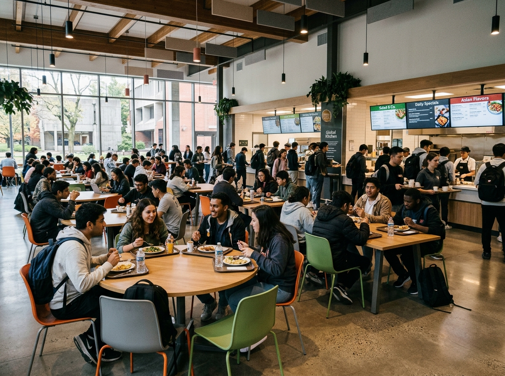
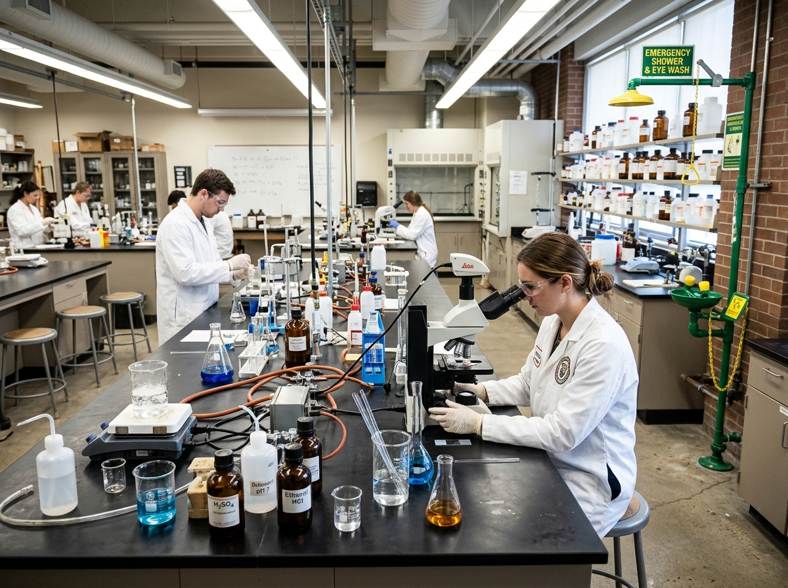

Smart Campus Scene Recognition
High-speed edge indoor localization and scene classification for university environments.
Experience the trained MobileNetV3-Large model live. Select any campus preset photograph or drag and drop your own photo to generate Top-3 predictions and campus automation triggers.
Inspect authentic visual artifacts generated directly during notebook execution, including the 18-image training sample grid and scikit-learn test confusion matrix.
Scene Recognition Playground
Upload any indoor photograph or click a campus space preset to run MobileNetV3 inference.

Canteen
LaboratoryDrop campus photo here
or click to browse files from your computer
Image will be resized to 224x224 and normalized for MobileNetV3Linear transition corridor with classroom entrances and reflective flooring.
Performance & Loss Curves
Trained on Adam optimizer for 5 epochs with cross-entropy loss and ImageNet transfer learning.
Training Accuracy & Loss (5 Epochs)
96.88% FinalClass Precision, Recall & F1-Score
Macro F1: 0.8663Interactive Test Confusion Matrix (160 Samples)
Horizontal rows represent true campus categories; vertical columns represent MobileNetV3 predictions.Scene Categories & Dataset Split
800 curated campus photographs categorized across 6 primary academic functional zones.
Dataset Class Distribution
800 Total ImagesSource Dataset Harmonization
The MIT Indoor-67 base dataset was systematically mapped into 6 distinct campus functional categories. For instance, dining spaces were unified:
category_mapping = {
"Classroom": ["classroom"],
"Common_Canteen": ["buffet", "fastfood_restaurant", "restaurant"],
"Corridor": ["corridor"],
"Laboratory": ["laboratorywet"],
"Library": ["library"],
"Office": ["office"]
}
Classroom
Learning spaces featuring lecture podiums, projection displays, and student tiered seating.
Common Canteen
Aggregated dining facilities, buffet lines, fast food counters, and communal dining benches.
Corridor
Indoor circulation thoroughfares with polished floors, overhead linear lighting, and signage.
Laboratory
Wet and practical engineering research labs containing chemical reagents, sinks, and microscopes.
Library
Quiet study environments characterized by ceiling-high bookshelves, individual study desks.
Office
Faculty and administrative spaces featuring desktop monitors, books, files, and personal desks.
MobileNetV3-Large Architecture
Optimized for sub-35ms inference latency on low-power campus edge devices and smart CCTV.
End-to-End Model Pipeline
RGB Image
224 x 224 x 3
Normalized (ImageNet)
MobileNetV3-Large
15 Inverted Residuals
Hard-Swish • SE Blocks
AdaptiveAvgPool2d
1 x 1 x 960
Global Context Vector
Linear Classifier
in_features: 1280
out_classes: 6 (Trained)
Softmax Probabilities
Top-1 Scene Class
Top-3 Ranking
Hard-Swish Activation Function
Replaces sigmoid-based Swish with a piece-wise linear approximation: h-swish(x) = x * ReLU6(x + 3) / 6. Eliminates non-linear transcendental operations, drastically accelerating CPU inference.
Squeeze-and-Excitation (SE) Attention
Dynamically recalibrates channel-wise feature responses by explicitly modeling interdependencies between channels. Boosts fine-grained scene recognition between visually similar rooms.
Deployment & API Integration
Run the static dashboard anywhere or launch the Python FastAPI service with PyTorch.
Deploy this dashboard as a standalone Single Page Application to Vercel, Netlify, or GitHub Pages. Runs entirely in the browser with embedded dataset assets and instant sample inference.
# Deploy with Vercel
npx vercel --prod
# Or run locally
npx serve .
Run our bundled server.py to load the trained mobilenetv3_six_class.pth weights and serve live predictions via REST API:
pip install fastapi uvicorn torchvision
python server.py
curl -X POST "http://localhost:8000/predict" \
-F "file=@assets/samples/corridor.jpg"